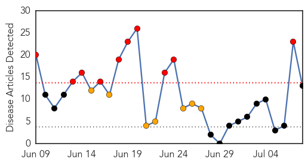

Chikungunya
30-Day Web Trend
10 alerts, 7 warnings

30-Day Twitter Trend
1 alerts, 0 warnings

Article Locations

Article Confidences

Top Articles:
- 1.000
- First Chikungunya Virus Case In Texas Confirmed BioNews Texas
- 0.999
- First chikungunya case confirmed in Texas
- 0.999
- What you should know about chikungunya
- 0.998
- 1st cases of mosquito-borne disease chikungunya identified in NH
- 0.998
- The chikungunya virus attacks the poor, even the Church is committed to keeping the disease under control
- 0.996
- The Lowdown On Chikungunya, The Mosquito-Transmitted Virus You Should Know About
- 0.995
- The Nassau Guardian
- 0.993
- The Chikungunya Virus - Bahamas
- 0.992
- 1st Texas case of Chikungunya virus reported in WILCO
- 0.990
- Bahamas update on the Chikungunya Virus
- 0.982
- Two Granite Staters test positive for Caribbean mosquito virus
- 0.976
- Maine CDC warns of new mosquito-transmitted virus
- 0.973
- First Human Case of Chikungunya in Texas
Top Tweets:
-
No tweets found for Jul 08, 2014
Dengue Fever
30-Day Web Trend
2 alerts, 5 warnings

30-Day Twitter Trend
4 alerts, 0 warnings

Article Locations

Article Confidences

Top Articles:
- 0.998
- Dengue fever cases rise 60% in year as travellers bring the virus back from holiday
- 0.992
- PHE reports rise in dengue fever
- 0.976
- Expert suggests extensive public education on dengue
- 0.962
- Expert suggests extensive public education on dengue – Bernama
- 0.884
- Infect mosquitoes to control dengue fever
- 0.771
- Here comes the Mosquito-Repellent Newspaper
- 0.757
- Ministry contemplates providing JE vaccine in high risk areas – BorneoPost Online
- 0.708
- Kill switch: breeding kamikaze mosquitoes
Top Tweets:
- 0.579
- RT: The relentless march of the mosquito-borne diseases: Imported dengue, chikungunya cases increased in the UK in 2013. ht…